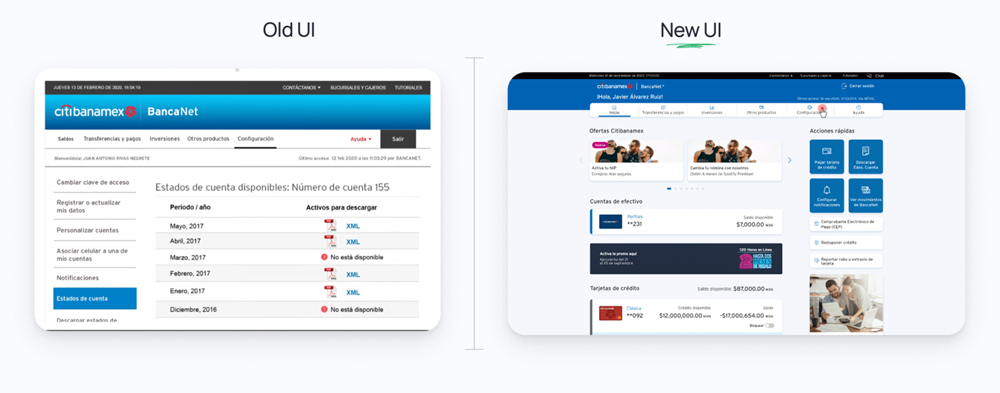
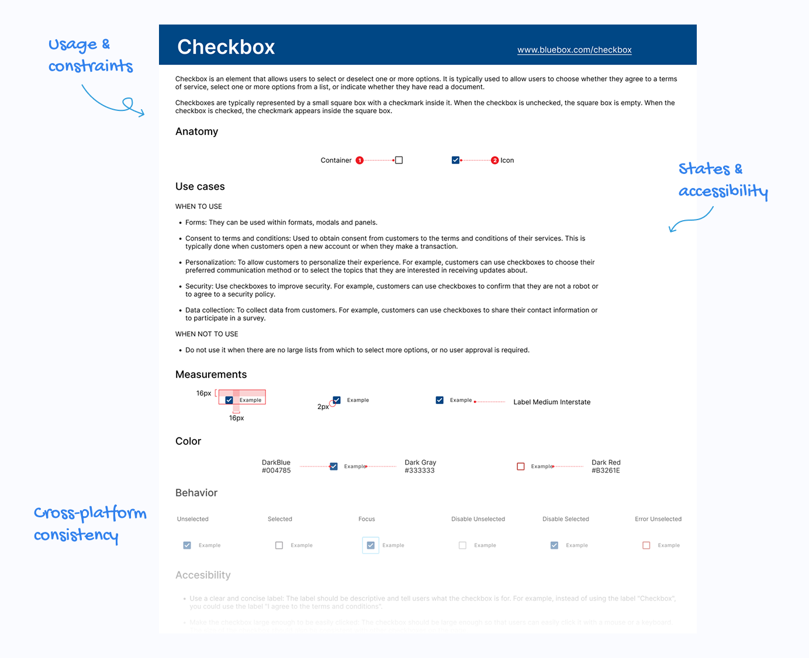
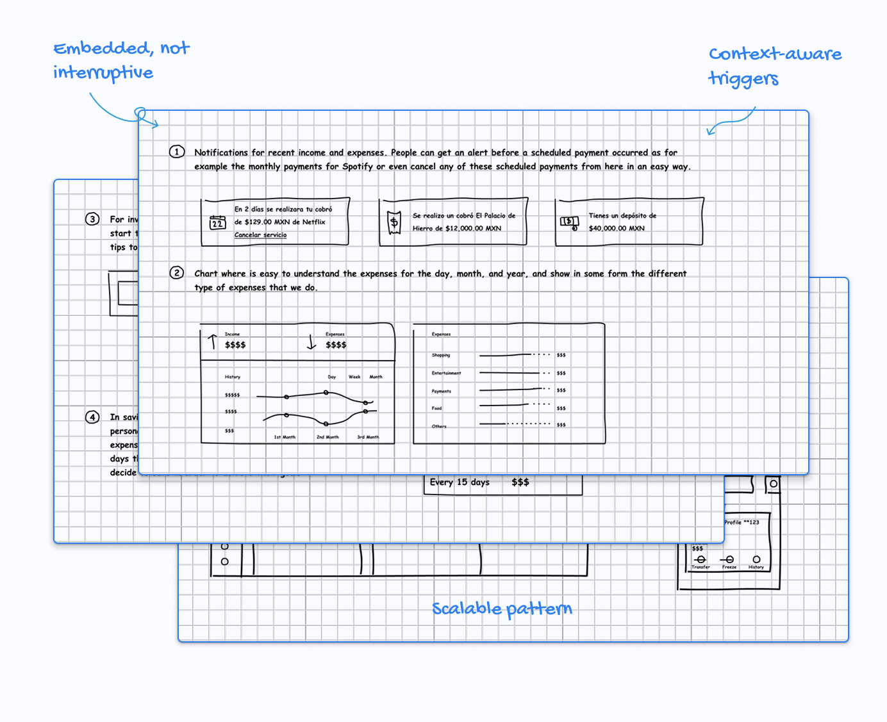

Citibanamex
Redesigning core banking journeys, scaling design systems, and enabling product discovery at enterprise scale.

- Role
- Ssr. UI/UX Designer
- Company · Year
- Globant · 2020
- Platform
- BancaNet, plus a design system for all Citibanamex products
- Scale
- ★ Millions of users nationwide
- Result
- ★ Faster dev implementation · Standardized flows · Shorter forms
- What I worked on
- UX strategy · Interaction design · Design systems · End-to-end ownership
One platform, many initiatives, millions of people.
At Citibanamex, I worked on a large-scale digital banking platform used daily by millions of users. The challenge was not a single feature, but coordinating multiple initiatives in parallel while maintaining clarity, accessibility, and trust.
BancaNet core redesign
BancaNet’s core journeys had evolved through incremental changes over time, resulting in fragmented flows and increased cognitive load.
- Restructured information architecture based on real user priorities
- Simplified high-frequency flows to reduce friction
- Designed with accessibility and predictability as first-class constraints

Design system (BlueBox)
Multiple teams were designing in parallel without shared standards, leading to inconsistencies and duplicated effort across products.
- Defined reusable components aligned with engineering workflows
- Established shared interaction and layout patterns
- Prioritized adoption and scalability over visual novelty
The design system was documented primarily within Figma, where components, variants, and usage guidelines lived close to the actual design work.

Personalized product discovery
Users were often unaware of the full range of Citibanamex products. Discovery lived outside core journeys, limiting engagement.
- Designed contextual discovery modules embedded within existing flows
- Aligned discovery logic with user intent and behavioral signals
- Created scalable patterns adaptable to future personalization

Restraint over spectacle
Interactions were intentionally restrained to prioritize clarity, predictability, and trust in high-stakes financial flows. Rather than introducing expressive motion, the focus was on:
- Clear system feedback for loading, success, and error states
- Consistent interaction patterns across journeys
- Action hierarchy and predictable behavior in critical moments
The goal was to reduce cognitive load and avoid introducing uncertainty in financial transactions.
Measuring success
Success was evaluated at different stages of the product lifecycle.
Before release
Validation focused on usability and clarity through:
- Usability testing and task completion rates
- Time on task and number of steps in high-frequency flows
- Identification of error areas
- Accessibility and consistency reviews
After release
Post-launch evaluation focused on real-world usage and adoption:
- Completion and drop-off rates in core journeys
- Navigation patterns and section engagement
- Reduction of reported issues and support friction
- Qualitative feedback from internal teams and stakeholders
Metrics were used as signals to guide iteration, rather than as isolated success indicators.
What changed
- The design system reduced implementation time with the development team
- Better accessibility solutions, built into shared components
- Standardized flows across BancaNet journeys
- Fewer steps in forms
This project reinforced the importance of designing across multiple layers: core experience, system foundations, and growth, while maintaining reliability in complex enterprise environments.